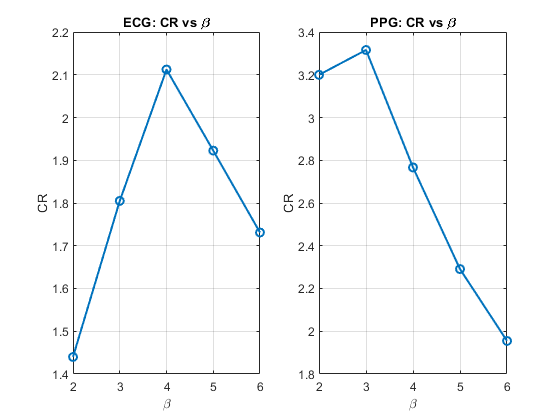
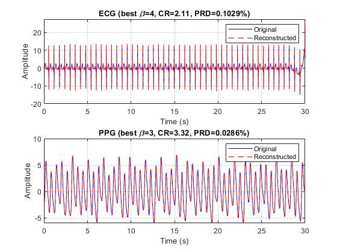
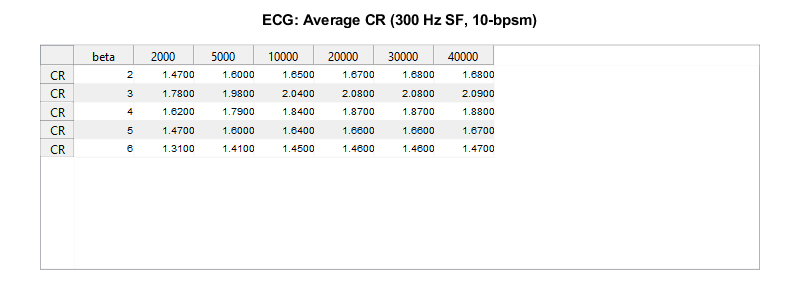
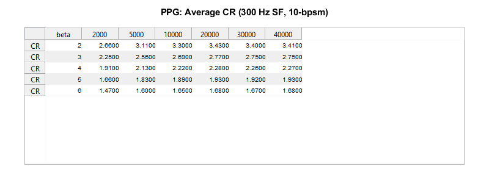
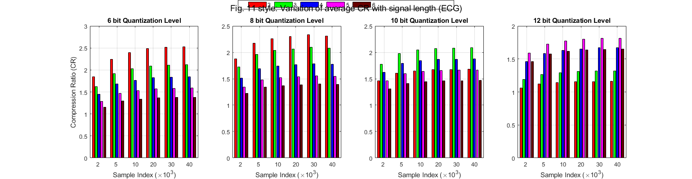
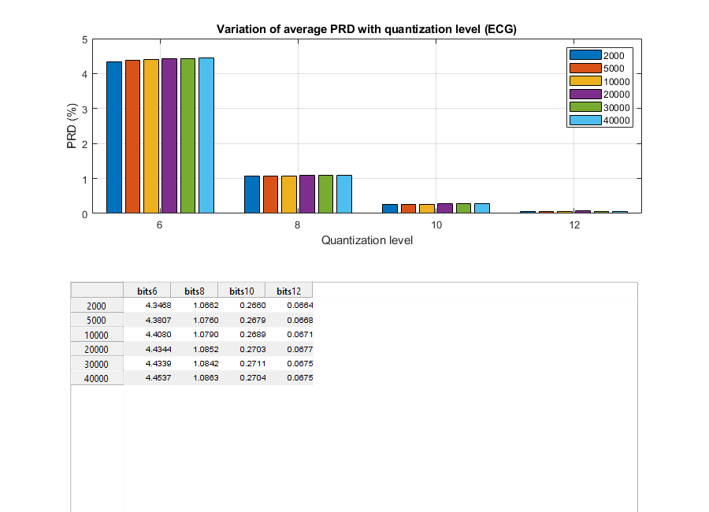

Contents
close all; clc; clear;
Parameters
fs = 300;
filename = 'doi-10.5683-sp2-nlb8it (1)/data/csv/0009_8min_signal.csv';
duration_sec = 30;
n_bits = 12;
beta_list = [2 3 4 5 6];
n_bits_list = [6 8 10 12];
beta_list_table = [2 3 4 5 6];
length_list = [2000 5000 10000 20000 30000 40000];
overhead_bits_table = 2000;
Load data
dataTable = readtable(filename); ecg_full = dataTable.ecg_y; ppg_full = dataTable.pleth_y; n_sel = duration_sec * fs; ecg = ecg_full(1:n_sel); ppg = ppg_full(1:n_sel); t = (0:n_sel-1)' / fs;
Filter signals once
ecg_filt = bandpass_filter(ecg, fs, 0.5, 100); ppg_filt = bandpass_filter(ppg, fs, 0.5, 3.4); ecg_filt_full = bandpass_filter(ecg_full, fs, 0.5, 100); ppg_filt_full = bandpass_filter(ppg_full, fs, 0.5, 3.4);
CR vs beta for 30-sec segment
results_ecg = compress_evaluate_sweep(ecg_filt, n_bits, beta_list); results_ppg = compress_evaluate_sweep(ppg_filt, n_bits, beta_list); fprintf('\n--- ECG Results ---\n'); disp(struct2table(results_ecg)); fprintf('\n--- PPG Results ---\n'); disp(struct2table(results_ppg)); figure('Name','CR vs Beta'); subplot(1,2,1); plot([results_ecg.beta], [results_ecg.CR], '-o', 'LineWidth', 1.5); grid on; xlabel('\beta'); ylabel('CR'); title('ECG: CR vs \beta'); subplot(1,2,2); plot([results_ppg.beta], [results_ppg.CR], '-o', 'LineWidth', 1.5); grid on; xlabel('\beta'); ylabel('CR'); title('PPG: CR vs \beta');
--- ECG Results ---
beta CR PRD_quant lossless orig_bits compressed_bits
____ ______ _________ ________ _________ _______________
2 1.4398 0.10295 true 1.08e+05 75011
3 1.805 0.10295 true 1.08e+05 59835
4 2.1123 0.10295 true 1.08e+05 51130
5 1.9225 0.10295 true 1.08e+05 56177
6 1.7309 0.10295 true 1.08e+05 62394
--- PPG Results ---
beta CR PRD_quant lossless orig_bits compressed_bits
____ ______ _________ ________ _________ _______________
2 3.1995 0.028601 true 1.08e+05 33755
3 3.3158 0.028601 true 1.08e+05 32571
4 2.7664 0.028601 true 1.08e+05 39040
5 2.2909 0.028601 true 1.08e+05 47144
6 1.9548 0.028601 true 1.08e+05 55248

Best beta reconstruction
[~, idx_ecg] = max([results_ecg.CR]); [~, idx_ppg] = max([results_ppg.CR]); best_beta_ecg = results_ecg(idx_ecg).beta; best_beta_ppg = results_ppg(idx_ppg).beta; [c_ecg, q_ecg, xmin_e, xmax_e] = compress_signal(ecg_filt, n_bits, best_beta_ecg); q_rec_ecg = decompress_signal(c_ecg); ecg_rec = dequantize(q_rec_ecg, xmin_e, xmax_e, n_bits); [c_ppg, q_ppg, xmin_p, xmax_p] = compress_signal(ppg_filt, n_bits, best_beta_ppg); q_rec_ppg = decompress_signal(c_ppg); ppg_rec = dequantize(q_rec_ppg, xmin_p, xmax_p, n_bits); figure('Name','Original vs Reconstructed'); subplot(2,1,1); plot(t, ecg_filt, 'b'); hold on; plot(t, ecg_rec, 'r--'); legend('Original','Reconstructed'); title(sprintf('ECG (best \\beta=%d, CR=%.2f, PRD=%.4f%%)', ... best_beta_ecg, results_ecg(idx_ecg).CR, results_ecg(idx_ecg).PRD_quant)); xlabel('Time (s)'); ylabel('Amplitude'); grid on; subplot(2,1,2); plot(t, ppg_filt, 'b'); hold on; plot(t, ppg_rec, 'r--'); legend('Original','Reconstructed'); title(sprintf('PPG (best \\beta=%d, CR=%.2f, PRD=%.4f%%)', ... best_beta_ppg, results_ppg(idx_ppg).CR, results_ppg(idx_ppg).PRD_quant)); xlabel('Time (s)'); ylabel('Amplitude'); grid on;

Table VI-style CR table
CR_table_ecg = zeros(length(beta_list_table), length(length_list)); CR_table_ppg = zeros(length(beta_list_table), length(length_list)); for bi = 1:length(beta_list_table) beta = beta_list_table(bi); for li = 1:length(length_list) L = length_list(li); CR_table_ecg(bi, li) = average_CR_over_windows(ecg_filt_full, 10, beta, L, overhead_bits_table); CR_table_ppg(bi, li) = average_CR_over_windows(ppg_filt_full, 10, beta, L, overhead_bits_table); end end VarNames = "L" + string(length_list); T_ecg = array2table(round(CR_table_ecg,2), 'RowNames', "beta" + string(beta_list_table), 'VariableNames', VarNames); T_ppg = array2table(round(CR_table_ppg,2), 'RowNames', "beta" + string(beta_list_table), 'VariableNames', VarNames); fprintf('\n=== ECG CR Table ===\n'); disp(T_ecg); fprintf('\n=== PPG CR Table ===\n'); disp(T_ppg); plot_cr_table(CR_table_ecg, beta_list_table, length_list, 'ECG: Average CR (300 Hz SF, 10-bpsm)'); plot_cr_table(CR_table_ppg, beta_list_table, length_list, 'PPG: Average CR (300 Hz SF, 10-bpsm)');
=== ECG CR Table ===
L2000 L5000 L10000 L20000 L30000 L40000
_____ _____ ______ ______ ______ ______
beta2 1.47 1.6 1.65 1.67 1.68 1.68
beta3 1.78 1.98 2.04 2.08 2.08 2.09
beta4 1.62 1.79 1.84 1.87 1.87 1.88
beta5 1.47 1.6 1.64 1.66 1.66 1.67
beta6 1.31 1.41 1.45 1.46 1.46 1.47
=== PPG CR Table ===
L2000 L5000 L10000 L20000 L30000 L40000
_____ _____ ______ ______ ______ ______
beta2 2.66 3.11 3.3 3.43 3.4 3.41
beta3 2.25 2.56 2.69 2.77 2.75 2.75
beta4 1.91 2.13 2.22 2.28 2.26 2.27
beta5 1.66 1.83 1.89 1.93 1.92 1.93
beta6 1.47 1.6 1.65 1.68 1.67 1.68


Fig. 11 style: CR vs length for multiple quantization levels
CR_all = zeros(length(n_bits_list), length(beta_list_table), length(length_list)); for bi = 1:length(n_bits_list) n_bits_cur = n_bits_list(bi); for li = 1:length(length_list) L = length_list(li); for gi = 1:length(beta_list_table) beta = beta_list_table(gi); CR_all(bi, gi, li) = average_CR_over_windows(ecg_filt_full, n_bits_cur, beta, L, overhead_bits_table); end end end figure('Name', 'Fig 11 style - CR vs Length', 'Position', [50 50 1600 400]); colors = [1 0 0; 0 1 0; 0 0 1; 1 0 1; 0.4 0 0]; for bi = 1:length(n_bits_list) subplot(1, length(n_bits_list), bi); data = squeeze(CR_all(bi, :, :))'; b = bar(data, 'grouped'); for gi = 1:length(beta_list_table) b(gi).FaceColor = colors(gi,:); end set(gca, 'XTickLabel', length_list/1000); xlabel('Sample Index (\times10^3)'); if bi == 1 ylabel('Compression Ratio (CR)'); end title(sprintf('%d bit Quantization Level', n_bits_list(bi))); grid on; end legend(arrayfun(@(x) num2str(x), beta_list_table, 'UniformOutput', false), ... 'Orientation', 'horizontal', 'Position', [0.35 0.95 0.3 0.05]); sgtitle('Fig. 11 style: Variation of average CR with signal length (ECG)');

Fig. 12 style: PRD vs quantization level
PRD_all = zeros(numel(length_list), numel(n_bits_list)); for bi = 1:numel(n_bits_list) n_bits_cur = n_bits_list(bi); for li = 1:numel(length_list) L = length_list(li); n_windows = floor(length(ecg_filt_full) / L); prd_vals = zeros(1, n_windows); for w = 1:n_windows idx1 = (w-1)*L + 1; idx2 = w*L; seg = ecg_filt_full(idx1:idx2); [q, xmin, xmax] = quantize_signal(seg, n_bits_cur); seg_q = dequantize(q, xmin, xmax, n_bits_cur); prd_vals(w) = prd_metric(seg, seg_q); end PRD_all(li, bi) = mean(prd_vals); end end figure('Name', 'PRD vs Quantization Level', 'Position', [100 100 900 650]); subplot(2,1,1); bar(n_bits_list, PRD_all', 'grouped'); xlabel('Quantization level'); ylabel('PRD (%)'); title('Variation of average PRD with quantization level (ECG)'); legend(arrayfun(@(x) num2str(x), length_list, 'UniformOutput', false), ... 'Location', 'northeast'); grid on; subplot(2,1,2); axis off; rowNames = cell(numel(length_list),1); for i = 1:numel(length_list) rowNames{i} = num2str(length_list(i)); end colNames = cell(numel(n_bits_list),1); for j = 1:numel(n_bits_list) colNames{j} = ['bits' num2str(n_bits_list(j))]; end uitable('Data', round(PRD_all,4), ... 'RowName', rowNames, ... 'ColumnName', colNames, ... 'Units', 'normalized', ... 'Position', [0.10 -0.4 0.80 0.85]); T_prd = array2table(round(PRD_all,4), ... 'RowNames', rowNames, ... 'VariableNames', colNames); fprintf('\n=== PRD Table ===\n'); disp(T_prd);
=== PRD Table ===
bits6 bits8 bits10 bits12
______ ______ ______ ______
2000 4.3468 1.0662 0.266 0.0664
5000 4.3807 1.076 0.2679 0.0668
10000 4.408 1.079 0.2689 0.0671
20000 4.4344 1.0852 0.2703 0.0677
30000 4.4339 1.0842 0.2711 0.0675
40000 4.4537 1.0863 0.2704 0.0675

Best beta summary
fprintf('\n=== Best beta per quantization level (PPG) ===\n'); for bi = 1:length(n_bits_list) avgCR = mean(squeeze(CR_all(bi,:,:)), 2); [~, best_idx] = max(avgCR); fprintf('n_bits=%d -> best beta=%d (avg CR=%.2f)\n', ... n_bits_list(bi), beta_list_table(best_idx), avgCR(best_idx)); end
=== Best beta per quantization level (PPG) === n_bits=6 -> best beta=2 (avg CR=2.34) n_bits=8 -> best beta=2 (avg CR=2.21) n_bits=10 -> best beta=3 (avg CR=2.01) n_bits=12 -> best beta=5 (avg CR=1.75)
===================== Local Functions =====================
function x_filt = bandpass_filter(x, fs, f_low, f_high) [b, a] = butter(2, [f_low f_high]/(fs/2), 'bandpass'); x_filt = filtfilt(b, a, x); end function [q, xmin, xmax] = quantize_signal(x, n_bits) xmin = min(x); xmax = max(x); levels = 2^n_bits - 1; q = round((x - xmin) / (xmax - xmin) * levels); end function x_rec = dequantize(q, xmin, xmax, n_bits) levels = 2^n_bits - 1; x_rec = double(q) / levels * (xmax - xmin) + xmin; end function val = prd_metric(x, xq) val = 100 * sqrt(sum((x - xq).^2) / sum(x.^2)); end function nbits = bits_needed(x) if isempty(x) nbits = 1; else m = max(abs(x)); if m == 0 nbits = 1; else nbits = ceil(log2(m + 2)); end end end function [c, q, xmin, xmax] = compress_signal(sig, n_bits, beta) [q, xmin, xmax] = quantize_signal(sig, n_bits); q = double(q); d1 = diff(q); d2 = diff(d1); beta_max = 2^(beta-1) - 1; alpha = beta_max + 1; theta = []; psi = []; xi = []; i = 1; n = length(d2); while i <= n val = d2(i); if val == 0 run = 0; while i <= n && d2(i) == 0 run = run + 1; i = i + 1; end theta(end+1) = 0; psi(end+1) = run; else if val >= -beta_max && val <= beta_max theta(end+1) = val; else theta(end+1) = alpha; xi(end+1) = val; end i = i + 1; end end c.theta = double(theta); c.psi = double(psi); c.xi = double(xi); c.alpha = alpha; c.beta = beta; c.n_bits = n_bits; c.first_q = double(q(1)); c.first_d1 = double(d1(1)); c.n_samples = length(sig); c.xmin = xmin; c.xmax = xmax; c.theta_bits = length(theta) * beta; c.psi_bits = length(psi) * bits_needed(psi); c.xi_bits = length(xi) * bits_needed(xi); c.overhead_bits = 2 * n_bits; c.total_bits = c.theta_bits + c.psi_bits + c.xi_bits + c.overhead_bits; end function q_rec = decompress_signal(c) theta = c.theta; psi = c.psi; xi = c.xi; alpha = c.alpha; d2 = []; psi_idx = 1; xi_idx = 1; for k = 1:length(theta) v = theta(k); if v == 0 run = psi(psi_idx); psi_idx = psi_idx + 1; d2 = [d2, zeros(1, run)]; %#ok<AGROW> elseif v == alpha d2(end+1) = xi(xi_idx); xi_idx = xi_idx + 1; %#ok<AGROW> else d2(end+1) = v; %#ok<AGROW> end end d1_rec = zeros(1, c.n_samples - 1); d1_rec(1) = c.first_d1; if ~isempty(d2) d1_rec(2:end) = c.first_d1 + cumsum(d2); end q_rec = zeros(1, c.n_samples); q_rec(1) = c.first_q; q_rec(2:end) = c.first_q + cumsum(d1_rec); q_rec = round(q_rec)'; end function results = compress_evaluate_sweep(sig, n_bits, beta_list) results = struct('beta', {}, 'CR', {}, 'PRD_quant', {}, 'lossless', {}, 'orig_bits', {}, 'compressed_bits', {}); for k = 1:length(beta_list) beta = beta_list(k); [c, q, xmin, xmax] = compress_signal(sig, n_bits, beta); q_rec = decompress_signal(c); sig_q = dequantize(q, xmin, xmax, n_bits); results(k).beta = beta; results(k).CR = (c.n_samples * n_bits) / c.total_bits; results(k).PRD_quant = prd_metric(sig, sig_q); results(k).lossless = isequal(round(q), q_rec); results(k).orig_bits = c.n_samples * n_bits; results(k).compressed_bits = c.total_bits; end end function plot_cr_table(CR_table, beta_list, length_list, titleStr) fig = figure('Name', titleStr, 'Position', [100 100 800 300]); colNames = ['beta', arrayfun(@(x) num2str(x), length_list, 'UniformOutput', false)]; rowData = cell(length(beta_list), length(length_list)+1); for i = 1:length(beta_list) rowData{i,1} = beta_list(i); for j = 1:length(length_list) rowData{i,j+1} = round(CR_table(i,j), 2); end end uitable(fig, 'Data', rowData, ... 'ColumnName', colNames, ... 'RowName', repmat({'CR'}, length(beta_list), 1), ... 'Units', 'normalized', 'Position', [0.05 0.1 0.9 0.75]); annotation(fig, 'textbox', [0.05 0.88 0.9 0.1], 'String', titleStr, ... 'HorizontalAlignment', 'center', 'EdgeColor', 'none', ... 'FontWeight', 'bold', 'FontSize', 11); end function CR_avg = average_CR_over_windows(sig_full, n_bits, beta, L, overhead_bits) n_windows = floor(length(sig_full) / L); if n_windows == 0 CR_avg = NaN; return; end CRs = zeros(1, n_windows); for w = 1:n_windows seg = sig_full((w-1)*L+1 : w*L); c = compress_signal_realistic(seg, n_bits, beta, overhead_bits); CRs(w) = (L * n_bits) / c.total_bits; end CR_avg = mean(CRs); end function c = compress_signal_realistic(sig, n_bits, beta, overhead_bits) [q, ~, ~] = quantize_signal(sig, n_bits); q = double(q); d1 = diff(q); d2 = diff(d1); beta_max = 2^(beta-1) - 1; alpha = beta_max + 1; theta = []; psi = []; xi = []; i = 1; n = length(d2); while i <= n val = d2(i); if val == 0 run = 0; while i <= n && d2(i) == 0 run = run + 1; i = i + 1; end theta(end+1) = 0; psi(end+1) = run; else if val >= -beta_max && val <= beta_max theta(end+1) = val; else theta(end+1) = alpha; xi(end+1) = val; end i = i + 1; end end c.theta_bits = length(theta) * beta; c.psi_bits = length(psi) * bits_needed(psi); c.xi_bits = length(xi) * bits_needed(abs(xi)); c.overhead_bits = overhead_bits; c.total_bits = c.theta_bits + c.psi_bits + c.xi_bits + c.overhead_bits; end